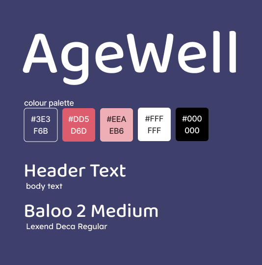

In a group of three, we were tasked with creating a mobile application for users 75 years and older, based on thorough user research and testing. My group created an app called “AgeWell” that assisted elderly users with remembering personal tasks, events and symptoms to report to their caretakers and or doctors.
The process started by researching articles that discussed the needs of elderly users when using mobile apps, before making a persona based on that research. As a group we decided that it would be useful to create an app that allowed users to create reminders, access a calendar and tracked their daily symptoms, all in one place. We created a styleguide including a colour palette and typeface that is highly visible for elderly users and created wireframes, in which I gathered reference images, inspirational pieces and further research into mobile applications/attributes best suited for elderly users. We used Protopie to create a functioning prototype to use for user testing, I helped to create various visual elements used in our final prototype and designed the interactions on our prototype. We conducted user tests with our desired audience age range and received feedback before applying necessary changes. With my user-tester I asked questions about their previous experiences with health/reminder related apps, and instructed them to move through our prototype and complete a list of given tasks, while I observed them and listened to their thought process and took notes. When they had finished testing the app I asked them questions about their experience using the app and gathered their feedback.
We had difficulty implementing features that were highly visible for users and easy to interact with on mobile. During our user tests we realized that some elements were too small for users to press if their hands are less mobile, and we were unsure how to design bigger elements in a way that still looked nice. It was difficult for me to leave behind what I was used to designing, such as small minimalistic elements for users who had no issues with visual elements, or mobility/accessibility. To fix this issue I did more research with my group on effective methods for assisting elderly users on mobile apps. I would definitely try to create a concept for an app that went beyond healthcare or memory loss, as many of my peers created apps that had the same concept as AgeWell.
Visual Design, Styleguide Creation, Prototyping, User-Testing
AgeWell Wireframes
AgeWell Styleguide